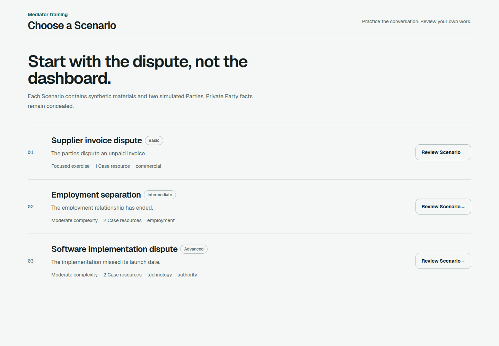

Private by structure
Every Event declares its audience. Each provider receives only that Party's authorized Projection.
Mediation rehearsal
Practice difficult mediations with independent simulated Parties. Each holds its own facts, limits, and view of the Session.
Closed alpha. Use synthetic material only.
Two perspectives remain distinct. The process holds the room between them.
Independent Party context
Joint Session and Caucus
Exact Event audiences
AGPL-licensed source
What changes in the room
Start from shared facts, private interests, Case resources, authority limits, and deterministic rules.
Use Anthropic, OpenAI, Venice AI, Ollama, or another OpenAI-compatible endpoint in either seat.
Move between Joint Session and Caucus, reach an outcome or impasse, then inspect or export the Event log.
Available now
Three versioned synthetic Scenarios exercise different facts, constraints, and process decisions. Private Party material remains concealed until the Scenario permits disclosure.

Built for rehearsal, not prediction
Every Event declares its audience. Each provider receives only that Party's authorized Projection.
Each Party has its own runtime, model, endpoint, and short-lived credential.
Keys live in server process memory and never enter Session storage, diagnostics, or exports.
Obversa does not provide legal advice, predict real people, or guarantee mediation outcomes.
Open source by design
The community application is licensed AGPL-3.0-only. Review the Scenario contract, Party boundaries, provider gateways, and deterministic domain rules in the repository.
Explore the repository